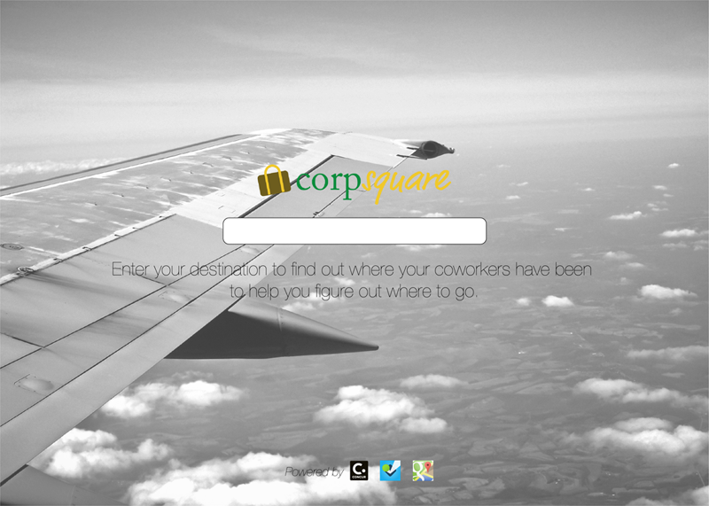
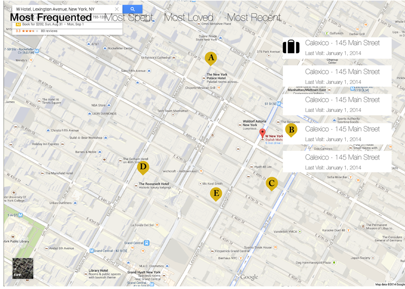
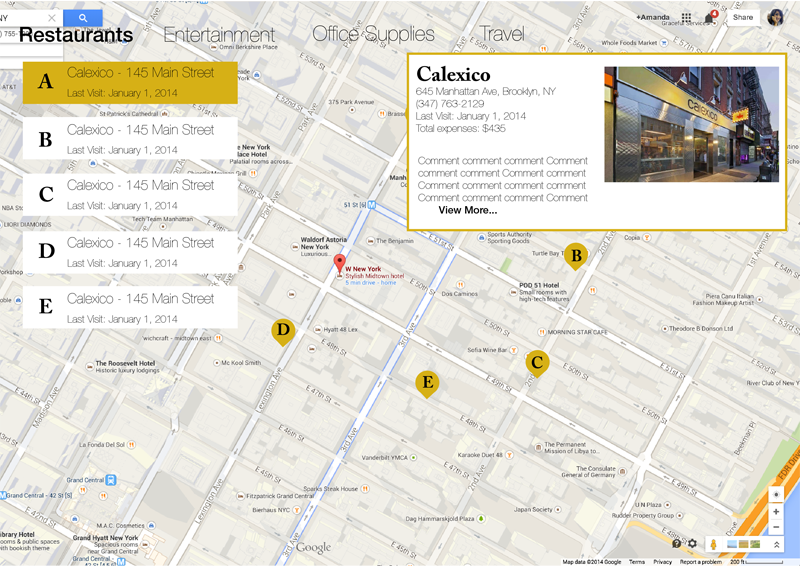

I came into the hackathon not knowing what to expect. Luckily, this was something I was doing with two friends from college (Andrew Furman and Michelle Lee) who had participated in a number of hackathons during undergrad. Michelle had recruited her friend Teddy Ku, and we were fortunate to meet Troy Shu and Amine TheDream at the event.
Like many hackathons, there were a number of API prizes. Since Andrew and Michelle were both consultants at the time, many of our initial ideas revolved around
Concur, the popular business travel expense management system. Andrew and I are both avid Foursquare (now Swarm) users, not only as a way to keep up with our friends, but also as a way to find new restaurants to try in New York City. After a few hours of ideas bouncing back and forth, I thought about how where we choose to spend our money is a way we make recommendations. That idea eventually evolved into CorpSquare, a webapp where business travelers can go to see how their coworkers have chosen to spend their money while on business travel.
Since employees would already have to upload their expenses to Concur, it would be simple enough to aggregate the data that a business already had to make recommendations to employees. There was almost no barrier to entry for employees to use CorpSquare to find restaurant recommendations while traveling for business.
Given the limited time we had to work on our hack, we wanted to keep the site very simple. Users simply searched for the city they wanted to travel to. Our initial mockups of the screens were done quickly to help us all get on the same page as far as the functionality went.

Once the user searched for their destination, they would be brought to a simple map listing all the restaurants their coworkers had been, based on the business expenses that Concur already had.

If a user selected one of the restaurants, a popup module would open to show basic details about the restaurant. We want to keep this interaction similar to other maps interactions so it would more accurately follow the mental model users have for interacting with a maps application.

Developing the mockups and the logo were things that Michelle and I worked on together. We collaborated on the ideas as I made them a reality on the computer. We let the rest of the team work on the backend development.
After working through the night to get our hack working, we realized that someone needed to pitch our idea. Though I knew I would be thoroughly outside of my comfort zone, I stepped forward to make the presentation. Where else would I get the chance to present in front of hundreds upon hundreds of people, talking about a project that I had seen from start to finish?
I definitely underestimated my nerves before the event. However, I got up on stage and
did it. I don't particularly remember getting up on stage, and have yet to rewatch it myself. Inspite of my serious nerves, the judges liked what we did, and awarded us the Concur Award for best use of the Concur API.
Today, Michelle and I are continuing work on our project with the founders of
Paradine to see if we can use our idea of taking Concur data to make recommendations for business travelers.